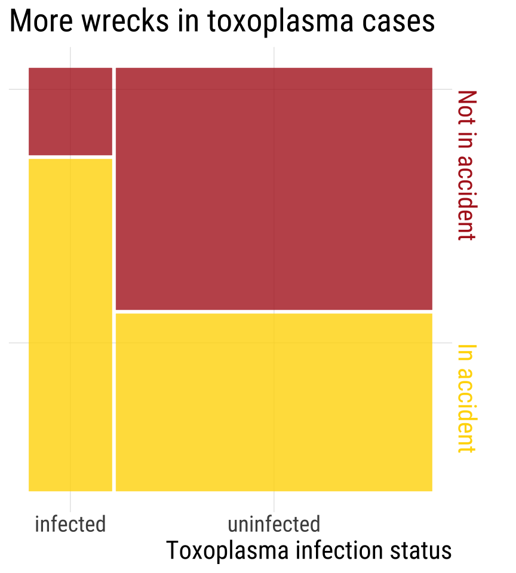
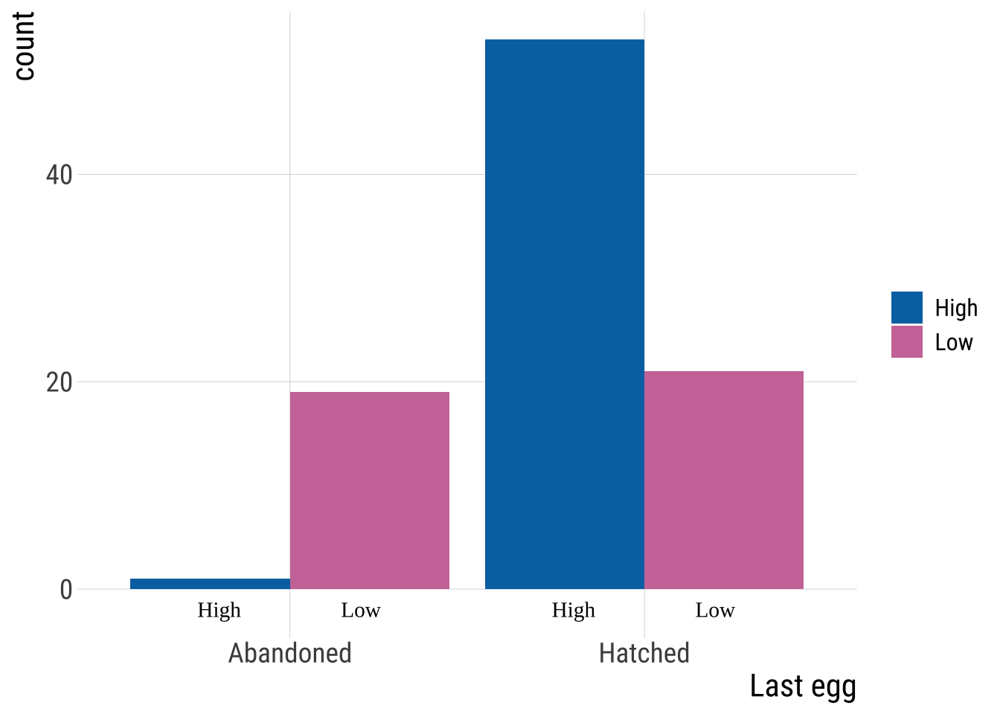
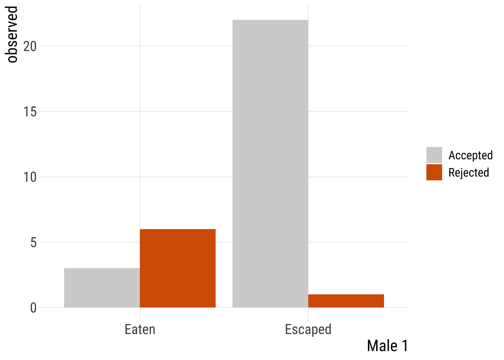

| Treatment | Control | |
|---|---|---|
| Success (focal outcome) | a | b |
| Failure (alternative outcome) | c | d |
8.2.Contingency Analyses
2x2 chi-2, Fisher| Acknowledgments to Y. Brandvain for code used in some slides
Keywords
2x2 chi-2, Fisher
Outline
Quantifying associations between two categorical variablesRelative riskOdds-ratioOR vs RR
Testing associations between categorical variables
\(\chi^2\) contingency test
Fisher’s test
Recap
Contingency analysis estimates and tests for an association between two or more categorical variables.
- At the heart of these approaches we are really investigating the independence of variables
RR vs OR
Both \(RR\) and \(OR\) measure the association between two categorical variables when both have only 2 categories.
RR is the probability of an undesired outcome in the treatment group divided by the probability of the same outcome in a control group. Especially appropriate when comparing the probability (risk) of a focal outcome in a response variable between two treatments or groups of subjects
The OR is the odds of “success” (focal outcome) in one group divided by the odds of success in a second group. The explanatory variable defines the groups being compared.
E.g. death in the titanic for women x men. Focal outcome is death. “Treatment” group for RR is women
When to Calculate OR (1/2)?
We often cannot obtain an unbiased estimate of \(p_1\) or \(p_2\).
Odds ratios risk can be calculated even when we don’t have a random sample and we can’t obtain unbiased probabilities!
Thus it is extremely useful for “case-control” studies, as they have a large sample of individuals with rare conditions.
\[\widehat{OR} = \frac{\widehat{O_1}}{\widehat{O_2}} = \frac{a/c}{b/d} = \frac{ad}{bc}\]
Case control studies: an observational study in which a sample of individuals with a focal condition (cases) is compared to a sample of subjects lacking the condition (controls).
Odds Ratio: Toxoplasma & Car Wrecks
Toxoplasma tricks mice into taking risks so it can find it’s way into cats. Could Toxoplasma be associated with risk taking in humans? Yereli et al. asked this by comparing Toxoplasma prevalence in people who caused car crashes to those who hadn’t.

\(\widehat{OR}\): Toxoplasma & Car Wrecks. Try!
| Treatment | Control | |
|---|---|---|
| Success (focal outcome) | a | b |
| Failure (alternative outcome) | c | d |
\[\widehat{OR} = \frac{\widehat{O_\text{infected}}}{\widehat{O_\text{uninfected}}} = \frac{a/c}{b/d} = \frac{ad}{bc} = ??? \]
| infected | uninfected | |
|---|---|---|
| In accident | 61 | 124 |
| Not in accident | 16 | 169 |
\(\widehat{OR}\): Toxoplasma & Car Wrecks
| Treatment | Control | |
|---|---|---|
| Success (focal outcome) | a | b |
| Failure (alternative outcome) | c | d |
\[\widehat{OR} = \frac{\widehat{O_\text{infected}}}{\widehat{O_\text{uninfected}}} = \frac{a/c}{b/d} = \frac{ad}{bc} =\frac{61 \times 169}{124 \times 16} = 5.2\]
| infected | uninfected | |
|---|---|---|
| In accident | 61 | 124 |
| Not in accident | 16 | 169 |
Toxoplasma & Car Wrecks. Summary
Without knowing the \(P(wreck \| toxoplasma)\) and \(P(wreck \| w/out toxoplasma)\) we can’t estimate RR
Still, we learned that the odds of being in a car wreck is five times higher if you have toxoplasma than if you do not!

Toxoplasma & Car Wrecks. Uncertainty
We estimate that the odds of being in a car wreck is 5.2 for those with, than those without Toxoplasma.
We know that estimates are associated with uncertainty.
We can quantify this!
Toxoplasma & Car Wrecks: OR 95% CI [1/2]
1st know that that standard error for the odds ratio cannot be directly computed, but the standard error of the log odds can!
\[SE[ln(\widehat{OR})] = \sqrt{\frac{1}{a} + \frac{1}{b} + \frac{1}{c} + \frac{1}{d}}\]
Then to find the 95% CI
Calculate \(SE[ln(\widehat{OR})]\)
Find the confidence limits of the log-odds as \(SE[ln(\widehat{OR})] \pm 2 \times SE[ln(\widehat{OR})]\)
Exponentiate this result to get back to linear scale
Toxoplasma & Car Wrecks: OR 95% CI [2/2]
\(SE[ln(\widehat{OR})] = \sqrt{\frac{1}{61} + \frac{1}{124} + \frac{1}{16} + \frac{1}{169}} = 0.305\)
Find the 95% CI as \(ln(\widehat{OR}) \pm 2 \times SE[ln(\widehat{OR})]\)
\(= ln(5.2) \pm 2 \times 0.305\)
\(= 1.65 \pm 0.61\)
95% CI of \(ln(\widehat{OR})\) is between 1.04 and 2.2695% CI of \(\widehat{OR}\) =
exp(c(1.04, 2.26))= 2.8, 9.6
CONCLUSION: \(2.8 < OR < 9.6\)
The odds of getting in an accident are plausibly between 2.8 and 9.6 times higher for people with than without Toxoplasma.
- Because the 95% CI does not contain 1, we reject the null hypothesis and conclude that there is an association between Toxoplasma infection and car accidents.
In R
The easiest way to calculate OR and CIs in R:
toxoplasma <- matrix(c(61, 16, 124, 169), nrow = 2)
colnames(toxoplasma) <- c("inf", "not-inf")
rownames(toxoplasma) <- c("crash", "no_crash")
toxoplasma
## inf not-inf
## crash 61 124
## no_crash 16 169
fisher.test(toxoplasma, conf.int = T)
##
## Fisher's Exact Test for Count Data
##
## data: toxoplasma
## p-value = 8e-09
## alternative hypothesis: true odds ratio is not equal to 1
## 95 percent confidence interval:
## 2.79 10.09
## sample estimates:
## odds ratio
## 5.17The CI above is a little different from the one before (Wald method) because this function uses a different method. You can find out more in the help(fisher.test) function. Lab10 also goes over this.
RR 95% CI
The 95% CI for the RR is also not pretty. Based on the same assumptions as the one we showed for \(OR\) (i.e., random samples):
\[SE[ln(\widehat{RR})] = \sqrt{\frac{1}{a} + \frac{1}{b} - \frac{1}{a+c} - \frac{1}{b+d}}\]
\[ln(\widehat{RR})-2\times SE[ln(\widehat{RR})]<ln(RR) < ln(RR)+2\times SE[ln(\widehat{RR})]\]
Note that for \(RR\) and \(OR\) there are several available methods and no consensus over which one is best.
The two we showed here use a type of rule of thumb based on the normal distribution. I.e., these are approximations based on the Z distribution.
95% CI in R with resampling (instead of this dreadful equation)
There is another way: we can bootstrap!
By bootstrapping, we approximate the sampling distribution by resampling outcomes with replacement and summarizing variability in this resampling to describe uncertainty.
Testing Associations Between Categorical Variables
\(\chi^2\) Contingency Tests and Fisher’s Exact Test
\(\chi^2\) Contingency Test of Independence
Remember: The multiplication rule states that if two outcomes, A & B are independent, \[P[A \& B] = P[A] \times P[B]\]
So, we have our expectation under the null hypothesis that A & B are independent.
We can test if our deviation from this expectation is unexpected under the null from the \(\chi^2\) test!
This is imply a special case of the \(\chi^2\) goodness of fit where the model described the independence between two (or more) categorical variables
Calculating \(\chi^2\) & Degrees of Freedom
Remember: \(\chi^2\) is the sum of deviations between expectations and observations,\(i\) and \(j\) are rows and columns, respectively.
\[\sum_i \sum_k{\frac{{(\text{Observed}_{i,j}-\text{Expected}_{i,j})^2}}{\text{Expected}_{i,j}}}\]
The degrees of freedom specify the additional number of values we need to know all the outcomes in our study.
\(\text{Degrees of freedom for } \chi^2 \text{ contingency test} = (n_\text{rows} - 1) \times (n_\text{columns} - 1)\)
Bird Abandonment Issues [1/]

What’s a bird to do when the rent is do and they can’t feed their chicks?
Kloskowski tested the idea that birds in poor habitats abandon their final egg.
Data for this example: Data for this example: https://doi.org/10.5061/dryad.6k417tm
Bird Abandonment Issues [2/]

Bird Abandonment Issues [3/]
Hypotheses:
\(H_0\): There is NO association between habitat quality & the chance of abandoning the last egg
\(H_A\): There is AN association between habitat quality & the chance of abandoning the last egg
Bird Abandonment Issues [4/]
Observations (contingency table)
table(birds$`Last egg`, birds$`Habitat quality`) |>
kable()| High | Low | |
|---|---|---|
| Abandoned | 1 | 19 |
| Hatched | 53 | 21 |
Bird Abandonment Issues [5/]
Observations (contingency table)
| High | Low | Total | |
|---|---|---|---|
| Abandoned | 1 | 19 | 20 |
| Hatched | 53 | 21 | 74 |
| Total | 54 | 40 | 94 |
Find null expectations!!!!!!
\(n_{abandoned}=(1+19)=20\)
\(n_{\text{hatched}}=74\)
Bird Abandonment Issues [6/]
Multiply proportions by each other and sample size to find null expectations. \[E[n(A,B) | n] = n \times P[A] \times P[B]\]
## `summarise()` has regrouped the output.
## ℹ Summaries were computed grouped by Habitat quality and Last egg.
## ℹ Output is grouped by Habitat quality.
## ℹ Use `summarise(.groups = "drop_last")` to silence this message.
## ℹ Use `summarise(.by = c(Habitat quality, Last egg))` for per-operation
## grouping (`?dplyr::dplyr_by`) instead.| Habitat quality | Last egg | observed | n.habitat | n.egg |
|---|---|---|---|---|
| High | Abandoned | 1 | 54 | 20 |
| High | Hatched | 53 | 54 | 74 |
| Low | Abandoned | 19 | 40 | 20 |
| Low | Hatched | 21 | 40 | 74 |
\(P_{habitat}=n_{habitat}/n_{total}\)
\(P_{egg}=n_{egg}/n_{total}\)
E.g. Expected \(P(\text{high & abandoned})=0.574\times 0.213\times 94\)
Bird Abandonment Issues [7/]
Null expectations:
Multiply proportions by each other and sample size to find null expectations. \[E[n(A,B) | n] = n \times P[A] \times P[B]\]
## `summarise()` has regrouped the output.
## ℹ Summaries were computed grouped by Habitat quality and Last egg.
## ℹ Output is grouped by Habitat quality.
## ℹ Use `summarise(.groups = "drop_last")` to silence this message.
## ℹ Use `summarise(.by = c(Habitat quality, Last egg))` for per-operation
## grouping (`?dplyr::dplyr_by`) instead.Abandonment: \(\chi^2\) Assumptions?
Remember assumptions
No more than 20% of categories have Expected \(< 5\)
No category with Expected \(\leq 1\)
| Habitat quality | Last egg | observed | p.habitat | p.egg | expected |
|---|---|---|---|---|---|
| High | Abandoned | 1 | 0.574 | 0.213 | 11.49 |
| High | Hatched | 53 | 0.574 | 0.787 | 42.51 |
| Low | Abandoned | 19 | 0.426 | 0.213 | 8.51 |
| Low | Hatched | 21 | 0.426 | 0.787 | 31.49 |
We meet the assumptions
Abandonment: \(\chi^2\)
Remember: \(\chi^2\) is the sum of the squared deviations from expected counts divided by expected counts.
\[\sum \frac{(\text{Observed}-\text{Expected})^2}{\text{Expected}}\]
\[\frac{( 1-11.5)^2}{11.5} + \frac{( 53-42.5)^2}{42.5} + \frac{( 19-8.5)^2}{8.5} + \frac{( 21-31.5)^2}{31.5}\]
So \(\chi^2 = 28.59\)(without rounding anywhere)
\[df = (n_\text{columns} - 1) \times (n_\text{rows} - 1)\]
\[df = (2 - 1) \times (2 - 1) = 1\]
Abandonment: Critical & P-values
| 0.1 | 0.01 | 0.001 | 1e-04 | 1e-05 | 1e-06 | 1e-07 | 1e-08 | |
|---|---|---|---|---|---|---|---|---|
| df = 1 | 2.7 | 6.6 | 10.8 | 15.1 | 19.5 | 23.9 | 28.4 | 32.8 |
| df = 2 | 4.6 | 9.2 | 13.8 | 18.4 | 23.0 | 27.6 | 32.2 | 36.8 |
We’re significant at the \(1e-7\) level
We reject the \(H_0\) and conclude that bird abandon eggs in bad environemnts.
In R: pchisq(q = birds.chi, df = 1, lower.tail = FALSE)= 8.96e-08
One tailed test?
Note that we only looked at one tail of the \(\chi^2\) distribution.
This does not mean that we only notice an association in one direction.
Both ways to be exceptional (an association between abandonment and poor environments OR an association between abandonment and good environments) yield a strong discrepancy between observations and expectations, and can generate a significant association.
Always quantify effect size, direction, and uncertainty
Bird abandonment with OR and CI
| High | Low | |
|---|---|---|
| Abandoned | 1 | 19 |
| Hatched | 53 | 21 |
\(OR=(1*21)/(53*19)=0.0209\)
# OR in this function is calculated a bit differently, hence the difference.
fisher.test(tab2)
##
## Fisher's Exact Test for Count Data
##
## data: tab2
## p-value = 5e-08
## alternative hypothesis: true odds ratio is not equal to 1
## 95 percent confidence interval:
## 0.000499 0.153059
## sample estimates:
## odds ratio
## 0.0217OR 95% CI: \(0.0005 <OR < 0.153\), reject the null.
What if we don’t meet \(\chi^2\) requirements?
Example: Nuptial Gifts
Sometimes, females of the Australian redback spider Latrodectus hasselti eat there mates. Is there anything in it for the males?
Maydianne Andrade tested the idea that eating a male might distract a female & prevent her for remating with a \(2^\text{nd}\) male.

Example from: Andrade, M. (1996). Science 271: 70-72 link
Nuptial Gift: Observed & Expected
| Male_2 | Male_1 | observed |
|---|---|---|
| Accepted | Eaten | 3 |
| Rejected | Eaten | 6 |
| Accepted | Escaped | 22 |
| Rejected | Escaped | 1 |

Nuptial Gift: Finding Expected
spider.summary <- spider %>%
group_by(Male_1) %>%
mutate(n.Male_1 = sum(observed)) %>%
ungroup() %>%
group_by(Male_2) %>%
mutate(n.Male_2 = sum(observed)) %>%
ungroup() %>%
mutate(p.Male1 = n.Male_1/sum(observed), p.Male2 = n.Male_2/sum(observed), expected = p.Male1 *
p.Male2 * sum(observed)) %>%
select(-n.Male_1, -n.Male_2)Nuptial Gift: \(\chi^2\) Assumptions?
No more than 20% of categories have Expected \(< 5\)
No category with Expected \(\leq 1\)
We do not meet assumptions
| Male_2 | Male_1 | observed | p.Male1 | p.Male2 | expected |
|---|---|---|---|---|---|
| Accepted | Eaten | 3 | 0.28 | 0.78 | 7.03 |
| Rejected | Eaten | 6 | 0.28 | 0.22 | 1.97 |
| Accepted | Escaped | 22 | 0.72 | 0.78 | 17.97 |
| Rejected | Escaped | 1 | 0.72 | 0.22 | 5.03 |
Fisher’s Exact Test
Generates all possible permutations of your data.
Asks what proportion of configurations result in associations as or more extreme than observed.
\(p-value =\)(Sum of Probabilities of Tables at least as Extreme as Observed Table) / (Sum of Probabilities of All Possible Tables)
The test statistic is calculated based on the hypergeometric distribution (which we won’t go into), which gives the probability of observing the given contingency table under the assumption of independence.
Fisher’s test in R
fisher.test(spider.spread)
##
## Fisher's Exact Test for Count Data
##
## data: spider.spread
## p-value = 6e-04
## alternative hypothesis: true odds ratio is not equal to 1
## 95 percent confidence interval:
## 0.000482 0.329721
## sample estimates:
## odds ratio
## 0.0279| method | lower.95 | upper.95 | odds_ratio | p.value | |
|---|---|---|---|---|---|
| odds ratio | Fisher's Exact Test for Count Data | 5e-04 | 0.3297 | 0.0279 | 6e-04 |
We reject the null hypothesis.
Doing our own permutations
\(1^{st}\) tidy data by going from this on left, to this on right
| Male_2 | Male_1 | observed |
|---|---|---|
| Accepted | Eaten | 3 |
| Rejected | Eaten | 6 |
| Accepted | Escaped | 22 |
| Rejected | Escaped | 1 |
| Male_2 | Male_1 |
|---|---|
| Accepted | Eaten |
| Accepted | Eaten |
| Accepted | Eaten |
| Rejected | Eaten |
| Rejected | Eaten |
| Rejected | Eaten |
| Rejected | Eaten |
| Rejected | Eaten |
| Rejected | Eaten |
| Accepted | Escaped |
| Accepted | Escaped |
| Accepted | Escaped |
| Accepted | Escaped |
| Accepted | Escaped |
| Accepted | Escaped |
| Accepted | Escaped |
| Accepted | Escaped |
| Accepted | Escaped |
| Accepted | Escaped |
| Accepted | Escaped |
| Accepted | Escaped |
| Accepted | Escaped |
| Accepted | Escaped |
| Accepted | Escaped |
| Accepted | Escaped |
| Accepted | Escaped |
| Accepted | Escaped |
| Accepted | Escaped |
| Accepted | Escaped |
| Accepted | Escaped |
| Accepted | Escaped |
| Rejected | Escaped |
By doing this
disaggregated.spider <- spider %>%
uncount(weights = observed)Doing our own permutations!
obs.diff <- disaggregated.spider %>%
summarise(obs = mean(Male_2 == "Rejected" & Male_1 == "Eaten"), expect = mean(Male_2 ==
"Rejected") * mean(Male_1 == "Eaten"), differ = abs(obs - expect)) %>%
select(differ) %>%
pull()
disaggregated.spider %>%
rep_sample_n(size = nrow(disaggregated.spider), reps = 5e+05) %>%
mutate(Male_1 = sample(Male_1, size = n(), replace = FALSE)) %>%
group_by(replicate) %>%
summarise(obs = mean(Male_2 == "Rejected" & Male_1 == "Eaten"), expect = mean(Male_2 ==
"Rejected") * mean(Male_1 == "Eaten"), differ = abs(obs - expect)) %>%
mutate(as.extreme = differ >= obs.diff) %>%
summarise(mean(as.extreme)) %>%
pull() # Our p-value!
## [1] 0.000614Chi-squared vs Fisher’s exact test
- Both have the same null hypothesis: the outcome is independent from the groups.
- Chi-square is generally best for larger samples and Fisher’s is better for smaller samples.
- Both can be extended to cases beyond 2x2 with 2 categorical variables, such as 3x2, 2x5, etc
- When to use Fisher’s exact test:
20% of categories with Expected values < 5
- Any expected value <1
- The column or row marginal values are extremely uneven.
- Note: Fisher’s ok for all sample sizes. But the # of possible tables grows at an exponential rate and soon becomes unwieldy. So mostly used for smaller sample sizes.